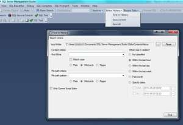
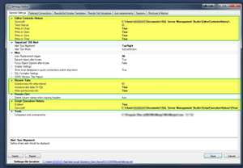
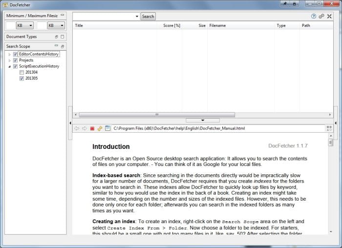
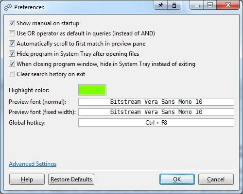
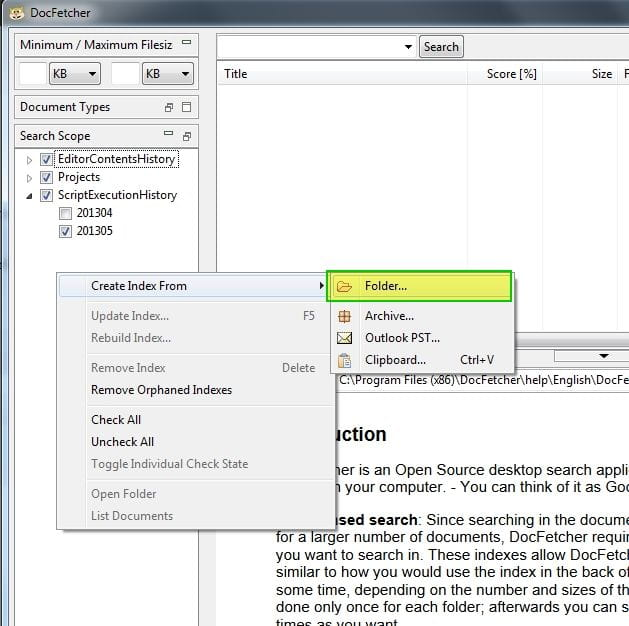
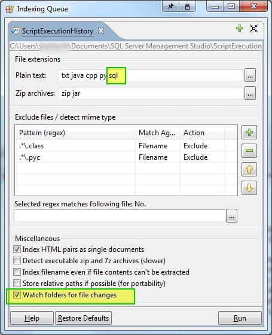
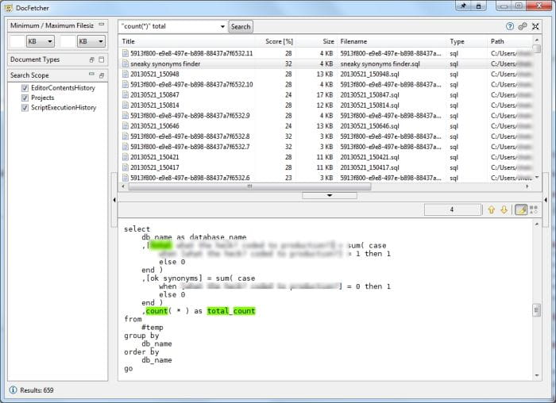

For sake of future generations, let's begin to reduce typing and reuse code we've built. I think we can all agree that TSQL statements are often repeated.
Ideally, snippets should be created to reduce repeated typing and let us focus on logic and content. However, some statements may not really be "snippet worthy", and just be quick adhoc queries.
In the past, the solution for saving queries for reuse or reference in the future would be to just save in the projects folder manually. However, it is difficult to always make sure the file is saved, review previous version that may be want had overrode, or even review what statements you actually executed. SSMSToolsPack has historically offered a great logging option. However, as an individual it was hard to justify the cost out of my own pocket. SSMSBoost has provided a great solution! Note that this was recently added (April), and is a "rough draft" , with minimal interface options, yet provides an amazing solution that I've found to offer a great solution.
In addition to the other great features that SSMSBoost offers (which I'll write about in the future), SSMSBoost now offers 3 unique solutions to saving work.
- Executed Statement Logging This feature saves all your executed statements (ie, when you hit execute) as a .sql file for future reference. As of today, there is no GUI for managing this. Never fear, I have a great solution for you.
- Editor History Logging This feature saves the current contents of your open query windows at predefined intervals, by default set to 60 seconds. According to their documentation, if no changes have been made to file, it will not save a new version. It will only add a new version once changes are detected to a file.

3.Tab History Logging If you crash SSMS, close SSMS without saving tabs, or have some unsavory Windows behavior that requires SSMS to be restarted, don't fear... your tabs are saved. When restarting you can select restore tabs and begin work again. I've found this feature to be a lifesaver!
Instructions I recommend for setup and searching your entire sql history nearly instantly.
- Install SSMSBoost (free community edition if you can't support with professional version)
- Install DocFetcher(open source full text search tool. Best I found for searching and previewing sql files without the complexity of using GREP or other similar tools)
- Download and run Preview Handler from WinHelp
- Run Preview Handler > Find .SQL > Preview as plain text
- Run SSMS > Open Settings in SSMSBoost
- Configure settings as you see fit. I personally move my Editor History and Executed statement's location to my SSMS Folder, so that I can use something like Create Synchronicity to backup all my work daily.

- Restart SSMS for settings to take effect.
- Start DocFetcher, go to settings in the top right hand corner.

Basic Settings I choose (If you aren't using Bitstreamfont... you are missing out)

CurvyTabs = true HtmlExtensions = html;htm;xhtml;shtml;shtm;php;asp;jsp;sql InitialSorting = -8
- Why? Curvy tabs... because curves are nice
- HTML Extensions, obvious
-
Initial Sorting = -8 means that instead of sorting by "match %" which I didn't find helpful for me, to sort by modified date in desc order. This means I'll find the most most recent match for the text I'm searching for at the top of my list.
-
Setup your custom indexes. I setup separate indexes for executed statements and editor history so I could filter down what I cared about and eliminate near duplicate matches for the most part. Right click in blank space to create index.
I setup as follows:


- Now the DocFetcher daemon will run in the background, if you copied my settings, and update your indexes. Searching requires no complex regex, and can be done easily with statements. I'd caution on putting exact phrases in quotes, as it does detect wildcards.
